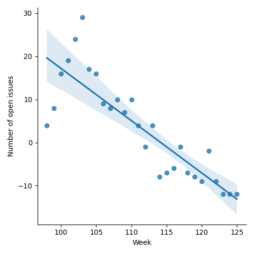
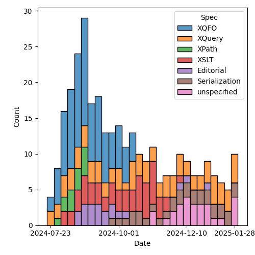
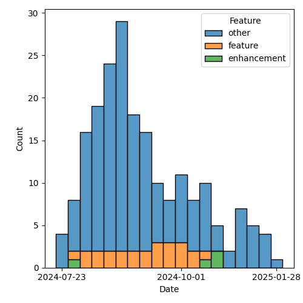

QT4 CG Meeting 108 Minutes 2025-02-04
Meeting index / QT4CG.org / Dashboard / GH Issues / GH Pull Requests
Table of Contents
- Draft Minutes
- Summary of new and continuing actions
[0/10] - 1. Administrivia
- 2. Technical agenda
- 3. Any other business
- 4. Adjourned
Draft Minutes
Summary of new and continuing actions [0/10]
[ ]QT4CG-082-02: DN to work with MK to come to agreement on the fn:ranks proposal[ ]QT4CG-097-02: MK to make the XSD schema component references into links to XSD[ ]QT4CG-103-01: MK to add an example of showing all the properties for an untyped node.[ ]QT4CG-107-01: MK to amend PR 1722 so the expansion of focus functions includes the return typeitem()*[ ]QT4CG-107-02: MK to propose adding the "duplicates" option (frommap:merge) tomap:buildandmap:of-pairs[ ]QT4CG-107-03: MK to propose amending all the functions that return ordered maps so that when duplicates are found, the key of the combined entry is taken from the first of the duplicates.[ ]QT4CG-107-04: MK to review CG’s comment to alignfn:map-mergeby removing the reference to random number generator and fixing a typo.[ ]QT4CG-107-05: JLO and DN to consider a proposal for system defined records.[ ]QT4CG-108-01: JWL look at the extra fn: prefixes introduced by the stylesheets in the binary spec[ ]QT4CG-108-02: NW to add links and tooltips to the new processing model diagrams
1. Administrivia
1.1. Roll call [11/13]
Regrets: MK.
[X]David J Birnbaum (DB)[X]Reece Dunn (RD)[X]Sasha Firsov (SF)[X]Christian Grün (CG)[X]Joel Kalvesmaki (JK)[ ]Michael Kay (MK)[X]Juri Leino (JLO)[X]John Lumley (JWL)[X]Dimitre Novatchev (DN)[ ]Wendell Piez (WP)[X]Ed Porter (EP)[X]Bethan Tovey-Walsh (BTW)[X]Norm Tovey-Walsh (NW). Scribe. Chair.
1.2. Accept the agenda
Proposal: Accept the agenda.
Accepted.
1.2.1. Status so far…
These charts have been adjusted so they reflect the preceding six months of work.

Figure 1: “Burn down” chart on open issues

Figure 2: Open issues by specification

Figure 3: Open issues by type
1.3. Approve minutes of the previous meeting
Proposal: Accept the minutes of the previous meeting.
Accepted.
1.4. Next meeting
This next meeting is planned for 11 February 2025.
CG gives regrets for 11 and 18 February.
1.5. Review of open action items [3/11]
(Items marked [X] are believed to have been closed via email before this agenda was posted.)
[ ]QT4CG-082-02: DN to work with MK to come to agreement on the fn:ranks proposal[X]QT4CG-088-04: [Someone] needs to update the processing model diagram needs vis-a-vis the static typing feature[ ]QT4CG-097-02: MK to make the XSD schema component references into links to XSD[ ]QT4CG-103-01: MK to add an example of showing all the properties for an untyped node.[X]QT4CG-106-01: NW to remove the dead wood from the XSLT build (SVG diagrams)[ ]QT4CG-107-01: MK to amend PR 1722 so the expansion of focus functions includes the return typeitem()*[ ]QT4CG-107-02: MK to propose adding the "duplicates" option (frommap:merge) tomap:buildandmap:of-pairs[ ]QT4CG-107-03: MK to propose amending all the functions that return ordered maps so that when duplicates are found, the key of the combined entry is taken from the first of the duplicates.[ ]QT4CG-107-04: MK to review CG’s comment to alignfn:map-mergeby removing the reference to random number generator and fixing a typo.[ ]QT4CG-107-05: JLO and DN to consider a proposal for system defined records.[X]QT4CG-107-06: NW to integrate DN’s expandable ToC into the build.
1.6. Review of open pull requests and issues
1.6.1. Blocked
The following PRs are open but have merge conflicts or comments which suggest they aren’t ready for action.
1.6.2. Merge without discussion
The following PRs are editorial, small, or otherwise appeared to be uncontroversial when the agenda was prepared. The chairs propose that these can be merged without discussion. If you think discussion is necessary, please say so.
- PR #1760: Remove hand-generated diffs from the builds
- PR #1759: Fix validation issues in the EXPath module function catalogs
- PR #1743: 1738 Formatting of Notes in F&O
- PR #1741: 1739 drop references to ordering mode in the static context
- PR #1734: 1682 Type promotion and operator mapping
Proposal: merge these PRs without discussion.
Accepted.
1.6.3. Close without action
It has been proposed that the following issues be closed without action. If you think discussion is necessary, please say so.
- Issue #1699: XPath function to calculate edit distance between two strings
- Issue #1571: Discussion: On the implementability of the specs and helping implementors
Proposal: close these issues without further action.
Accepted.
2. Technical agenda
2.1. PR #1753: 1750 Overhaul of EXPath binary spec
See PR #1753.
- JWL: Jirka and I have both gone through it. It seems fine; there are good
formal definitions now. We’ve also done a first pass at getting errors
corrected. There are still a copy of tiny little things. (Wrong error code,
for example.)
- … Encourage you to look through; there are some nice 4.0 syntax “tricks” that make the definitions easy to use and understand.
- … There are no additions; there have been a few things trimmed, but there’s very little backwards incompatibility.
Some discussion about when we agreed to take this on.
- RD: Some of the functions have an additional fn: prefix.
- JWL: Those are probably construction operations, piggybacking off stuff in the F&O stylesheets.
ACTION: QT4CG-108-01: JWL look at the extra fn: prefixes introduced by the stylesheets in the binary spec
Proposal: Accept this PR.
Accepted.
2.2. PR #1746: Replace processing model diagrams
See PR #1746.
NW shows the diagrams
- JWL: Is this SVG? Do we have the sources?
- NW: Yes, they’re made with GraphViz and checked in the sources.
- JK: Is there any checking for alignment when things change?
- NW: No, alas.
- RD: Can we have links now and tool tips for SQ1 etc.?
- NW: Yes. Good idea.
TION: QT4CG-108-02: NW to add links and tooltips to the new processing model diagrams
Proposal: Accept this PR.
Accepted.
2.3. Some discussion of the table of contents
- DN: Thank you for the expandable/collapsable table of contents.
Some discussion of whether there might be outstanding performance issues in the JavaScript, especially with respect to the widget that opens/closes the ToC.
If you have an issue, please open an issue.
2.4. Issue triage
Using the PRG-* tags seems like it would be inviting confusion. New tags
proposal:
Reviewed-required, this is a required feature; we can’t progress without it.Reviewed-optional, this is an optional feature we’re still hoping to finish.Reviewed-close, this is an optional feature that we’d like to have, but we’re going to abandon it if no one provides a detailed change proposal. (This category implies “close without further action” at the next meeting.)Reviewed-easy,Reviewed-hard, optional tags indicating the consensus intuition about how difficult it would be to address the issue.
There are 70 untriaged issues. We can start at the top, or the bottom, or with nominations for “easy to categorize” issues.
2.4.1. Issue 75
Issue #75: Support processing HTML 5 template element content
- RD: I think it’s useful to have open. From the discusions that we had, I think we can defer it.
- DB: Do we also have a “meritorious but we need someone to do it”
- NW: Yes, I can do that.
- DN: Alternatively, we could make a time when people can present their issues.
- NW: No. They were on the agenda.
Reviewed-optional
- RD: It would be nice to have feedback from people using parse-html if the current mechanisms are sufficient.
2.4.2. Issue 158
Issue #158: Support optional parameters on dynamic functions
- RD: I’m happy for this to be optional or closed.
- DN: I think we should know what prevented the original author from preparing a PR.
- RD: I created this ticket as a result of discussions in one of the meetings; based on a comment from DN, I believe.
Reviewed-optional
2.4.3. Issue 285
Issue #285: Stability of collections
- CG: This is about how much latitude implementations have for returning collections in a particular order.
- JLO: I think that it would make sense to make collections nondeterministic.
Reviewed-optional
2.4.4. Issue 322
Issue #322: Map construction in XSLT: xsl:record instruction
- JWL: Can we look at this next week?
- JK: If a member of the group wishes to avoid assigning a label, then it should come with action.
2.4.5. Issue 576
Issue #576: JSON serialization: INF/NaN, function items
Reviewed-optional
- Issue #583: (array|map):replace → *:substitute or *:change
- CG: This is just a question of whether we want a map:replace function?
- JLO: We have specified array and map replace.
- CG: Yes, but the idea from MK was that we could replace them with map:substitute. But it’s been two years.
- DN: Almost no one knows what this is. It would be better to wait until next week.
- CG: I suggest we attempt to close this one.
Reviewed-optional
Chair declares the triage exercise a fail for this week. Will put a shorter set of issues on the list next time with the expectation that members will come prepared to triage them.
- JWL: Take all the XSLT once and push them next week.
3. Any other business
None heard.